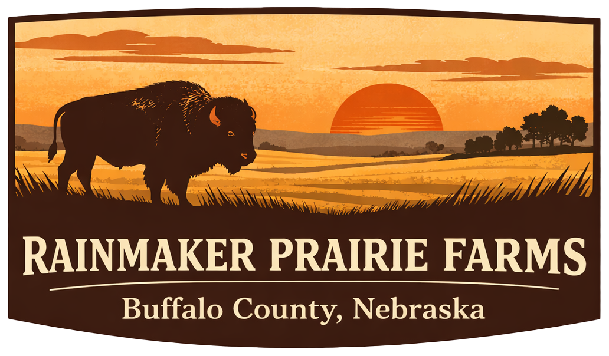

Farm eggs
Chicken and duck eggs when the flock and season allow.
Availability varies
Rainmaker Prairie FarmsThe farmstand
Our selection follows the season. Some weeks the stand is full; other weeks we are waiting for the next harvest or laying cycle.
What to expect
Contact us to confirm current availability before making a special trip.
Chicken and duck eggs when the flock and season allow.
Availability variesVegetables from the garden, offered fresh as they are harvested.
In seasonSmall-batch goods made from farm produce as time and harvest permit.
Limited batchesSmall batch, big flavor. Available through Rainmaker Prairie Farms, prepared by Elemental Sourdough.
Classic · Roasted Garlic · Five Seed · Jalapeño Cheddar · Marble Rye · Italian Rye
Preorder availableFarmstand preorders
Request sourdough and other farm products in one order. We will confirm availability, pricing, and pickup details before your order is finalized. No payment is collected here.
Submitting opens your email app with the order details. Send the email to complete your request.
Before you come
Send us an email and we will let you know what is currently at the stand.
Products, quantities, and hours may change without notice. The farmstand is not a full-time retail store, and not every item listed here is available every day.